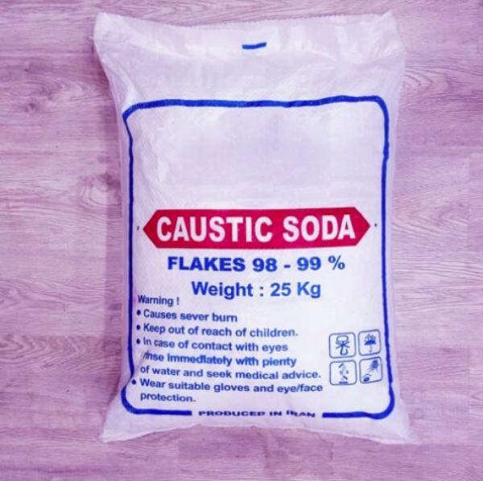
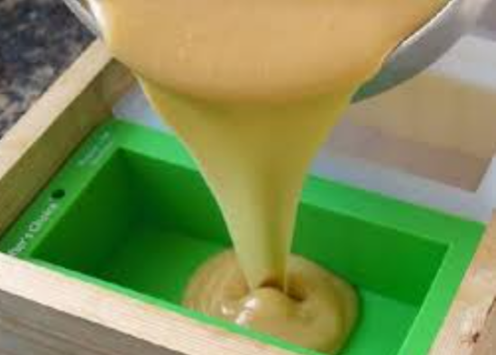

2025 Get skills hub
Home of Endless and profitable learning
Jifunze Kutengeneza Sabuni kwa urahisi
Kutengeneza sabuni nyumbani ni mradi wa kufurahisha na kujifuza
Vitu Utakavyohitaji
- MAFUTA: Unaweza kutumia mafuta ya mawese, nazi au mafuta mengine ya asili.
- CAUSTIC SODA: Hii ni kemikali ambayo hutumika Kutengeneza sabuni.
- MAJI: Maji yaliyosafishwa ni bora zaidi.
- RANGI: Kwa hiari yako unaweza kutumia rangi za asili kama tumeric, kakao n.k..
- VYOMBO: Vyombo vya plastiki au chuma visivyotumika kwa chakula.
- MOLD: Chombo chenye umbo unalotaka kufyatulia sabuni yako.
- KIFAA CHA KUKOROGEA: Kifaa cha mbao kitafaa zaidi.
- GLAVU ZA USALAMA.

Hatua za Kufuata
- ANDAA KAZI YAKO: Hakikisha una eneo safi lenye hewa ya kutosha.
- CHANGANYA CAUSTIC SODA NA MAJI: Changanya angalau kilo 1 ya caustic kwenye kila lita 4 za maji.
- CHANGANYA MAFUTA: Changanya mafuta yote uliyochagua.
- CHANGANYA MCHANGANYIKO: Polepole mimina mchanganyiko wa caustic soda kwenye mafuta huku ukikoroga taratibu. Lita 1 ya caustic kwa lita 2 za mafuta..
- ONGEZA VIUNGO VINGINE: Kwa hiari yako unaweza sasa kuongeza viungo vingine kama rangi, viungo vya harufu n.k..
- KOROGA ZAIDI: Endelea kukoroga mchanganyiko huo taratibu hadi uwe mzito vya kutosha. 
- MIMINA KWENYE MOLD: Mimina mchanganyiko kwenye chombo cha kufyatulia.
- SUBIRI: acha sabuni ikauke kwa siku kadhaa.
- ONDOA SABUNI: Ondoa kwenye mold na ukate sabuni kwa vipande uvipendavyo.
- NGOJA IKAUKE: Subiri kwa wiki moja au zaidi hadi sabuni iwe ngumu.
- SASA SABUNI YAKO IKO TAYARI KWA MATUMIZI.
Tahadhari za Kuzingatia
- Usitumie vyombo vya Alumini. Caustic inaathiriwa na alumin.
- Usichukue pumzi ya mvuke wa caustic. Inaweza kuunguza ngozi na mapafu.
- Usishike caustic soda kwa mikono mitupu. Endapo caustic itatua kwenye ngozi yako kamulia limao kisha osha kwa maji safi .
- Unapochanganya caustic anza kwa kuweka maji na kisha uweke caustic kwenye maji na si vinginevyo.